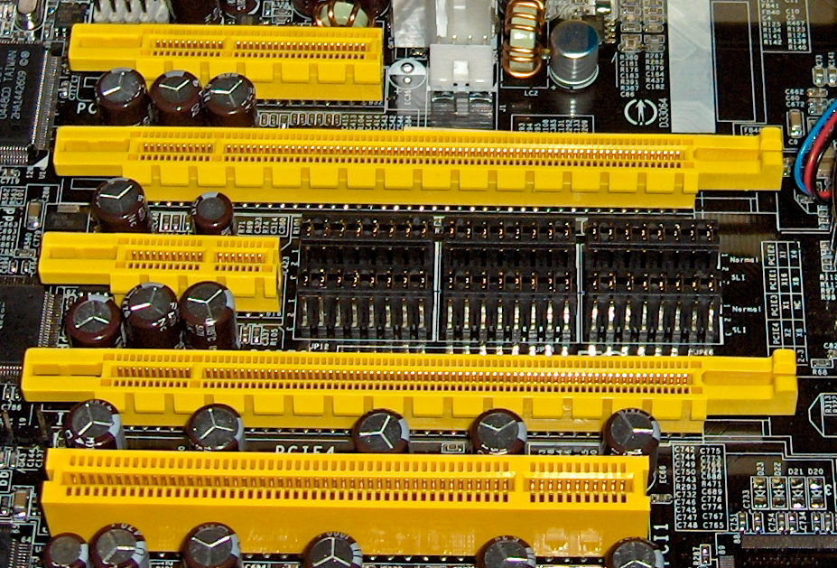
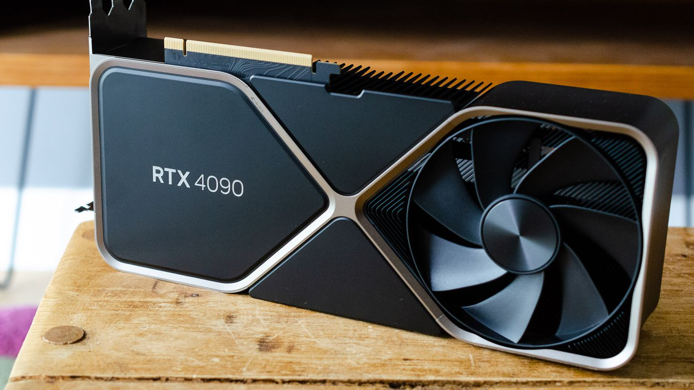

PCI of Peripheral Component Interconnect werd ontwikkeld in de jaren 1990 als een bus met een hoge bandbreedte waarop allerlei randapparaten aangesloten kunnen worden. We hebben het dan bijvoorbeeld over een netwerkkaart, een audio adapter, ...
De bovenstaande standaard is ondertussen meer dan 30 jaar oud en werd vervangen door PCI Express. Dit was nodig omdat de snelheid van PCI niet meer voldoende was voor de apparaten die we er nu op willen aansluiten. We spreken dan over grafische kaarten, netwerkkaarten, harde schijven, enzovoort.
PCI Express biedt heel wat voordelen ten opzichte van PCI. Vooral de hogere snelheid, de kleinere afmetingen en hot-swapping waarbij appararen aan- en afgeschakeld kunnen worden terwijl het systeem actief is.
De hogere snelheid wordt behaald doordat PCI Express, in tegenstelling tot PCI, geen klassieke bus architectuur meer heeft maar werkt als een point-to-point verbinding.
Bij PCI was de capaciteit van de bus gedeeld over alle apparaten en kon er slechts 1 apparaat tegelijkertijd actief zijn. Bij PCI Express kunnen alle apparaten op hetzelfde moment actief zijn. De communicatie kan in tegenstelling tot PCI ook full duplex verlopen.
Verder onderscheiden we PCI Express x1, x2, x4, x8 en x16. In onderstaande afbeelding zie je x4, x16, x1, x16 en helemaal onderaan de klassieke PCI aansluiting. Hoe meer bandbreedte een apparaat nodig heeft, hoe groter het PCI Express slot.

Ondertussen zijn er al verschillende versies van de PCI Express standaard de revue voorbij gegaan. Elke versie verdubbelt de snelheid van de vorige: 5.0 haalt over een x16 slot al 63 GB/s, en de meest recente standaard is de 7.0.
Deze laatste is vooral nodig wanneer het gaat over grafische kaarten, 4k schermen die aangestuurd moeten worden met een hoge framerate hebben gigantisch veel bandbreedte nodig.
| Versie | Jaar | Lijncode | Transfersnelheid | x1 | x2 | x4 | x8 | x16 |
|---|---|---|---|---|---|---|---|---|
| 1.0 | 2003 | 8b/10b | 2.5 GT/s | 250 MB/s | 0.50 GB/s | 1.0 GB/s | 2.0 GB/s | 4.0 GB/s |
| 2.0 | 2007 | 8b/10b | 5.0 GT/s | 500 MB/s | 1.0 GB/s | 2.0 GB/s | 4.0 GB/s | 8.0 GB/s |
| 3.0 | 2010 | 128b/130b | 8.0 GT/s | 984.6 MB/s | 1.97 GB/s | 3.94 GB/s | 7.88 GB/s | 15.8 GB/s |
| 4.0 | 2017 | 128b/130b | 16.0 GT/s | 1969 MB/s | 3.94 GB/s | 7.88 GB/s | 15.75 GB/s | 31.5 GB/s |
| 5.0 | 2019 | 128b/130b | 32.0 GT/s | 3938 MB/s | 7.88 GB/s | 15.75 GB/s | 31.51 GB/s | 63.0 GB/s |
| 6.0 | 2022 | 1b/1b | 64.0 GT/s | 7563 MB/s | 15.13 GB/s | 30.25 GB/s | 60.5 GB/s | 121.0 GB/s |
| 7.0 | 2025 | 1b/1b | 128.0 GT/s | 15125 MB/s | 30.25 GB/s | 60.5 GB/s | 121.0 GB/s | 242.0 GB/s |
